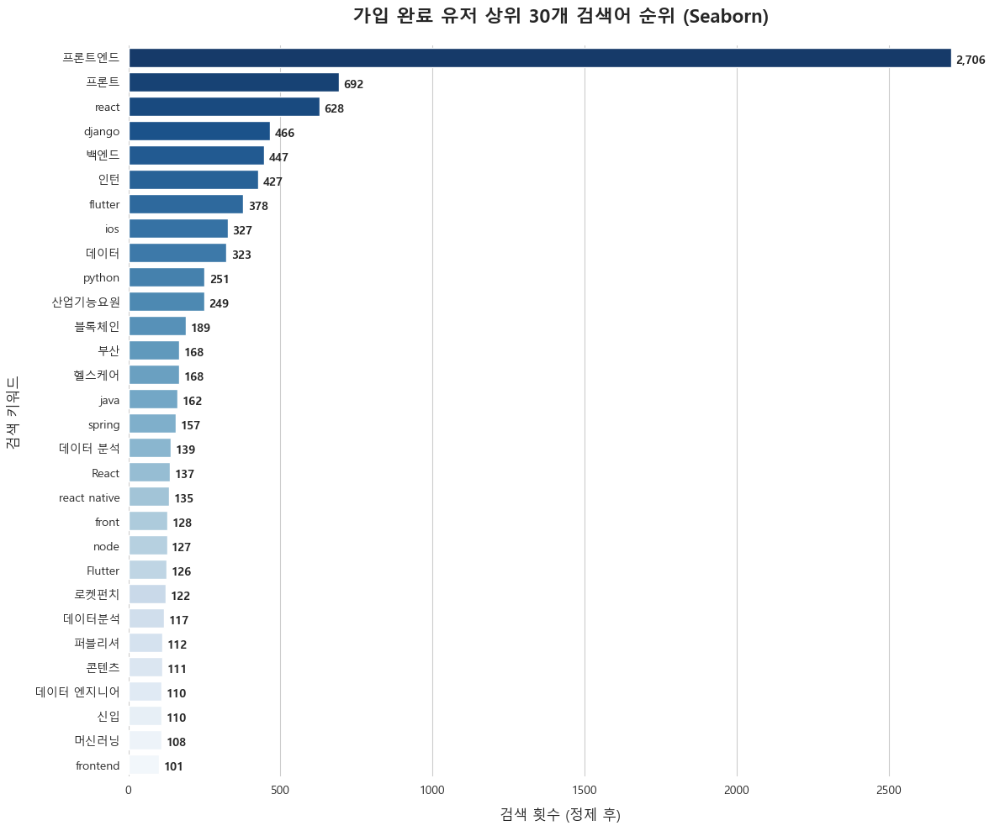
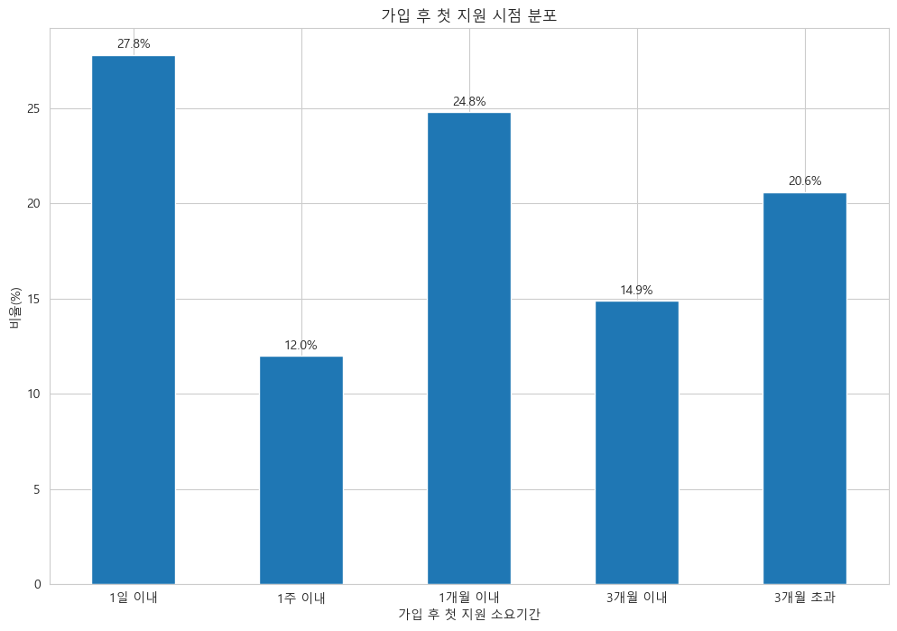
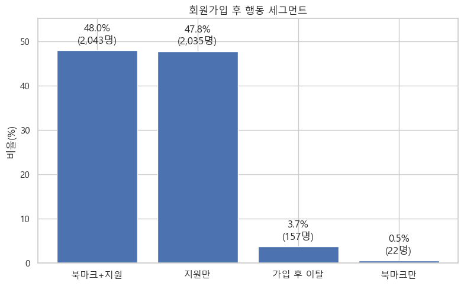
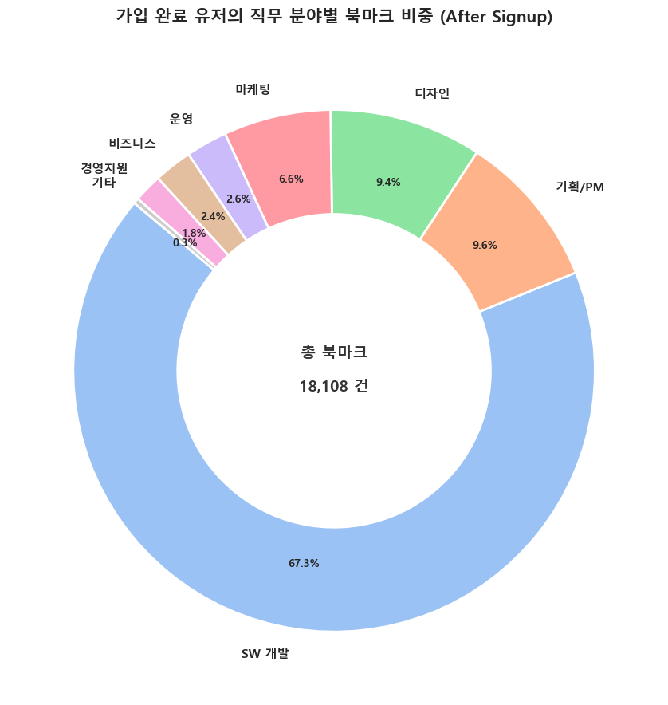
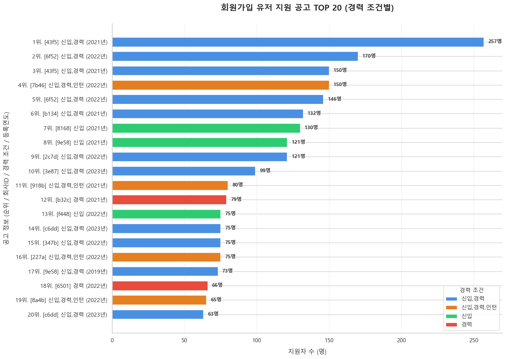
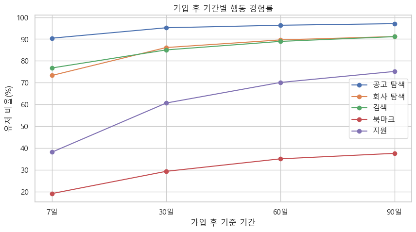

Activation 분석 보고서
원본: notebooks/02_Activation_Report.ipynb · 분석 대상: 가입 완료(step3/done, 200) 유저 · 분석 기간 2022-01-01 ~ 2023-12-31
가입을 마친 유저가 실제로 검색·지원·북마크 같은 핵심 기능을 어떻게 쓰기 시작하는지, 그리고 그 활동이 시간이 지나며 어떻게 깊어지는지를 분석했다.
1. 검색 행동과 첫 지원까지의 여정
가입 완료 유저의 검색어를 집계하면 특정 직군에 대한 쏠림이 뚜렷하다.

그림 1. 가입 완료 유저의 상위 30개 검색어(정제 후 검색 횟수 기준). '프론트엔드'가 2,706회로 2위 '프론트'(692회)의 4배 가까이 앞선다.
- 프론트엔드 개발 직군에 압도적으로 쏠려 있다: 상위 검색어 대부분이 개발 직군(프론트엔드/react/django/백엔드/flutter/ios/python) 관련이며, '데이터'·'헬스케어'·'블록체인' 등이 그 뒤를 잇는다.
- 가입 완료 후 첫 행동은 프로필편집(1,520명) → 공고조회(1,382명) → 검색(579명) 순으로 많다 — 검색보다 프로필 정비나 공고 확인이 더 이른 행동이다.
가입 후 첫 지원까지 걸리는 시간은 넓게 퍼져 있다.

그림 2. 가입 완료 후 첫 지원까지 걸린 기간 구간별 비율.
- 1일 이내 즉시 지원이 27.8%로 가장 큰 단일 구간이다 — 가입 전에 이미 지원할 공고를 정해둔 유저층으로 보인다.
- 반면 20.6%는 3개월이 지나서야 첫 지원을 한다. 중앙값은 13.3일(약 2주)이지만 평균은 62.2일(약 2개월)까지 늘어나, 이력서 보관용 가입이나 휴면 후 재방문 같은 지연 패턴이 섞여 있음을 시사한다.
2. 첫 행동이 만드는 차이, 그리고 북마크의 역할
가입 직후 첫 행동으로 무엇을 했는지가 이후 지원 활동의 크기를 가른다.

그림 3. 가입 완료 유저를 가입 이후 행동 기준으로 4개 세그먼트로 분류. 북마크+지원(48.0%)과 지원만(47.8%)이 대부분을 차지한다.
- 북마크만 하고 지원하지 않는 유저는 0.5%(22명)에 불과하다 — 북마크는 지원을 대체하는 기능이 아니라 지원으로 이어지는 보조 행동이다.
- 가입 후 완전히 이탈하는 비율도 3.7%로 매우 낮다 — 가입 퍼널을 통과한 유저 대부분은 어떤 형태로든 실제 구직 활동을 시작한다.
- 첫 행동으로 프로필을 먼저 편집한 유저의 평균 지원 횟수(8.16회)는 공고를 먼저 조회한 유저(5.49회)보다 뚜렷이 높다(중앙값 4회 vs 2회) — 프로필 정비가 이후 적극적인 구직 활동의 선행 지표로 보인다.
북마크된 공고의 직무 분야를 보면 검색 행동과 같은 쏠림이 나타난다.

그림 4. 가입 후 북마크된 공고(총 18,108건)의 직무 분야별 비중. SW개발이 67.3%로 압도적이다.
3. 인기 공고 특성과 시간에 따른 활동 성장
실제로 가장 많은 지원을 받은 공고를 보면, 검색·북마크에서 드러난 SW개발 쏠림이 지원 단계까지 이어진다.

그림 5. 가입 완료 유저의 지원 공고 TOP 20 (경력 조건별 색상). 1위 공고는 257명이 지원했다.
- TOP 20 중 다수가 '신입,경력' 또는 '신입' 조건으로, 경력 무관·신입 허용 공고에 지원이 집중된다.
- 종합적으로 지원 집중도에 영향을 미치는 순서는 직무 > 경력 조건 > 연봉 공개 여부 > 원격근무 여부이며(노트북 4-2절), 연봉 공개 공고가 비공개 대비 약 8% 높은 평균 지원자 수를 보인다.
가입 후 시간이 지날수록 각 행동의 경험률은 함께 증가하지만, 그 속도는 행동마다 다르다.

그림 6. 가입 후 7·30·60·90일 기준 행동 경험률 추이.
- 공고 탐색(90.5%→97.4%)·회사 탐색·검색은 가입 7일 만에 이미 70% 이상에 도달해 빠르게 포화한다.
- 반면 지원(38.4%→75.2%)과 북마크(19.2%→37.8%)는 완만하게 계속 증가한다 — 탐색은 초반에 몰리지만, 실제 지원·저장 행동은 90일 동안 꾸준히 쌓이는 후행 지표다.
결론 및 제언
| 제안 액션 |
관찰된 근거 |
| 가입 직후 프로필 작성 온보딩 넛지 강화 |
프로필을 먼저 편집한 유저의 평균 지원 횟수가 1.5배 높음 (그림 3) |
| 가입 후 1~2주 시점 재방문 유도 알림 |
첫 지원까지 중앙값 13.3일, 3개월 초과 지연도 20.6% 존재 (그림 2) |
| SW개발·신입 가능·연봉 공개 공고 노출 강화 |
검색·북마크·지원 전 단계에서 SW개발 쏠림이 일관되게 관찰됨 (그림 1, 4, 5) |
| 가입 후 30일 이후에도 지원·북마크 유도 지속 |
두 지표는 90일까지 완만히 계속 증가하는 후행 지표 (그림 6) |
우선순위(실행 순서)는 팀 리소스·기술 난이도 등 이 분석 밖의 정보에 달려 있어 별도로 매기지 않았다. 위 액션들은 모두 노트북에서 실제로 관찰된 수치를 근거로 한다.